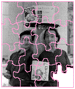

See if you can solve this programming puzzle, presented in the form of a dialog
between Konstantin Othmer (KON) and Bruce Leak (BAL). The dialog gives cluesto help
you. Keep guessing until you're done; your score is the number to the left of the clue
that gave you the correct answer. These problems are supposed to be tough. If you
don't get a high score, at least you'll learn interesting Macintosh trivia.
BAL Here's one for you, KON: I've got this server that I store builds on. It's a Macintosh
ci running System 7.1 with File Sharing enabled, hooked up over Ethernet. The server
runs an experimental MPW tool that spins the beach-ball cursor (don't they all?)
waiting for a build to appear; then it renames the build with the next release number
and makes it available to the public. Early on we had some problems with the tool and
it would occasionally crash the server, but that seems to be working now.
KON So what's the problem?
BAL When I use the Finder to copy my latest build out there, it crashes the server. Yet
when I use the duplicate command as part of the MPW build script for my project, it
works.
KON I thought you did all your builds in THINK C.
BAL Of course, but I use MPW for file management just like the guys on the Finder
team.
KON Chalk one up for MPW.
BAL But that's not all. When I use the Finder to copy other files out to the server it
works fine. Solve me, KON. Over.
KON I'm suspicious of that MPW shell script running on the server. It's continuously
making file system calls while File Sharing is trying to copy your file over in the
background. There must be some contention caused by MPW trying to rename the file
while it's still in the process of being copied.
BAL Come on, KON, what do you think we're running here? This is System 7 we're
talking about. Don't you think we would get something like that right on the seventh
try?
KON No comment.
100 BAL If I stop the MPW shell script running on the server or even quit MPW
completely, the server still crashes when I use the Finder to copy my build to it.
KON Are the Finder copies that crash file-size dependent?
95 BAL Size doesn't seem to matter. The Finder can successfully copy files that are the
same size, smaller, and bigger than mine without crashing the server.
KON So it's the server that's crashing?
BAL Yeah, the progress bar comes up on the client machine, the copy starts, and then
almost immediately the server crashes and the client machine hangs in XPP's two-
minute penalty box.
KON There's an updated version of the StopXPP dcmd that works with System 7 for all
those MacsBugphiles. Install that baby and you're golden. When the client hangs
because the server has gone away, just drop into MacsBug and type StopXPP to force
the connection to time out immediately. Any other problems?
90 BAL Yeah, yeah, yeah. I've already got that dcmd. My machine isn't hung anymore,
but the server is still crashed and your point total is still falling.
KON You packrat! You stole one of those rev J Apple Ethernet cards from Van Brink's
garage. It's dropping bits, same as it ever did, and the way the Finder is slicing up
your bit stream chokes it.
85 BAL Sorry, it's rev K of the card -- the one that only drops bits when you're
running in 32- bit mode -- but the ci has only 8 megs of RAM and is running in
24-bit mode.
KON OK, I'll try Third-Party Cards for $200.
80 BAL KON, I use only Apple equipment. Throw the card out altogether, use
LocalTalk, and it still happens. Get a life.
KON Are there any other cards in the ci that are dropping bits? Perhaps the Apple ci
cache card?
75 BAL No cards, but if it makes you feel any better, I'll have Vanna swap in a new ci,
keeping only the hard disk; it still happens.
KON I don't want a ci anymore. How 'bout we try an fx, or maybe even a Classic?
70 BAL Vanna's getting a little tired here. Bad news: it still happens on all of them.
KON What if we try one of those NuTek boxes?
65 BAL Fine. It crashes on boot. Next.
KON And swapping out the hard drive fixes it?
60 BAL Swapping out the hard drive stops the server from crashing. Any chance I can
solve this problem and preserve my existing hardware investment?
KON So there's something wrong with your system software or the File Sharing
software on that drive. I'll reinstall all that stuff and watch it work beautifully.
Problem solved.
55 BAL Not! After you reinstall System 7.1 and all the bogus networking disks, and
reinstall MacsBug and the dcmds from the virgin copies that came with that Debugging
Macintosh Software book, ISBN #0-201-57049-1, it still happens.
KON I never really trusted installing over existing corrupt software. So I throw
everything in the trash, empty the trash, and reinstall fresh.
50 BAL It still happens.
KON Maybe the volume allocation is messed up: you've got some bad I-nodes, circular
B- tree references, or some other HFS mumbo jumbo. I'll confer with Dr. Norton and
see what he thinks.
45 BAL Doctors Norton, Feldman, and Bruffey, Disk FirstAid, and others all give it a
clean bill of health, though a few file dates were wrong and they've been fixed.
KON So maybe some part of the media went bad, producing bad sectors or ambiguous
data. I'll do a media test using Silverlining.
40 BAL The media is fine. OK, KON. Quit screwing around. It's not a hardware problem.
KON But when I replaced the hard disk, the problem went away. What remains after I
throw all the files away? Well, the driver persists. I'll update the driver with the
utility software that came with the drive.
35 BAL It still happens. It doesn't have anything to do with the driver.
KON I'll try SneakerNet!
30 BAL Well, transferring the file by floppy disk doesn't work either, using the
Finder on the server. Surprisingly, this most reliable means of networking doesn't
work even though you aren't using high-density floppies. In this case paper clips don't
even help.
KON OK, I reformat the drive and reinstall the software fresh.
25 BAL Now it works. So what's the bug?
KON Well, the reformatting changed the interleave, and there was some weird timing
problem hosing you.
20 BAL Enough grasping at straws. Remember it only happens with my file or copies
of my file. Get those rusty old gears turning.
KON I'll chop the file into pieces and see if those still crash the server when I copy
them. I'll strip out all the CODE resources with ResEdit and try that file.
15 BAL The file is pretty small now, and it still crashes.
KON I strip out all the data by setting the EOF.
10 BAL It still crashes. Look, I can build it from scratch, I can build it on other
machines, I can change the code that's in it, other people can build it on their
machines, it happens with Ethernet, SneakerNet, LocalTalk, you name it -- it still
crashes.
KON And people thought we'd run out of these puzzles.
BAL I got a great one for next time, too, but you've got to finish this one first.
KON So what makes my file my file? If it's not the name, the data in it, or the creation
date, it's got to be the container info -- the icon, the file type, the creator, that stuff.
BAL Your puzzle, KON.
KON The Desktop Manager previously used only by AppleShare is used by the Finder in
System 7, right?
5 BAL Yeah, there are two invisible data files: Desktop DB and Desktop DF. Desktop DF
has the all the data for the icons, and Desktop DB has information for all files: the
document-to-application binding, the file-to-icon binding, and the file-to-comment
binding. For each application creator, it keeps a list of all the applications of that type
with the newest one first. That way when you double-click a document, the Finder
launches the newest version of the application that handles that document.
KON I get it. The desktop database got corrupted by the experimental MPW tool you had,
and when the Finder tries to update the database, it reads bad data and chokes.
BAL It worked when copying files via MPW because MPW doesn't try to keep the
desktop database up to date.
KON So you should be able to rebuild the desktop database by holding down the Command
and Option keys while booting. Then everything will work great.
BAL I knew the AppleShare servers are the most reliable in the business, and I
couldn't believe we got one to crash.
KON Well, if you want to write sleazy MPW tools that you haven't fully debugged, you
get what's coming to you.
BAL In fact, for ultimate security on a network server, you should lock it in a room
and not run any weird stuff that isn't endorsed by your AppleShare administrator.
KON Right! But if you insist on running untested code, you get what you pay for.
BAL Nasty.
KON Yeah.
KONSTANTIN OTHMER AND BRUCE LEAK spent some time in the county slammer
this summer, BAL for bungee jumping off a Cupertino freeway overpass and KON for
losing the landmark "KON versus Stockton Board of Health" tenants-rights trial. They
were able to get reduced sentences by working as waiters in "Pro Bono," the prison's
nouvelle cuisine restaurant, (see photo) and faithfully adhering to the Macintosh
Human Interface Guidelines .*
SCORING
Thanks to Gary Davidian, Pat Dirks, scott douglass, Kevin Stinson, and Chris Zuleeg
for reviewing this column. *